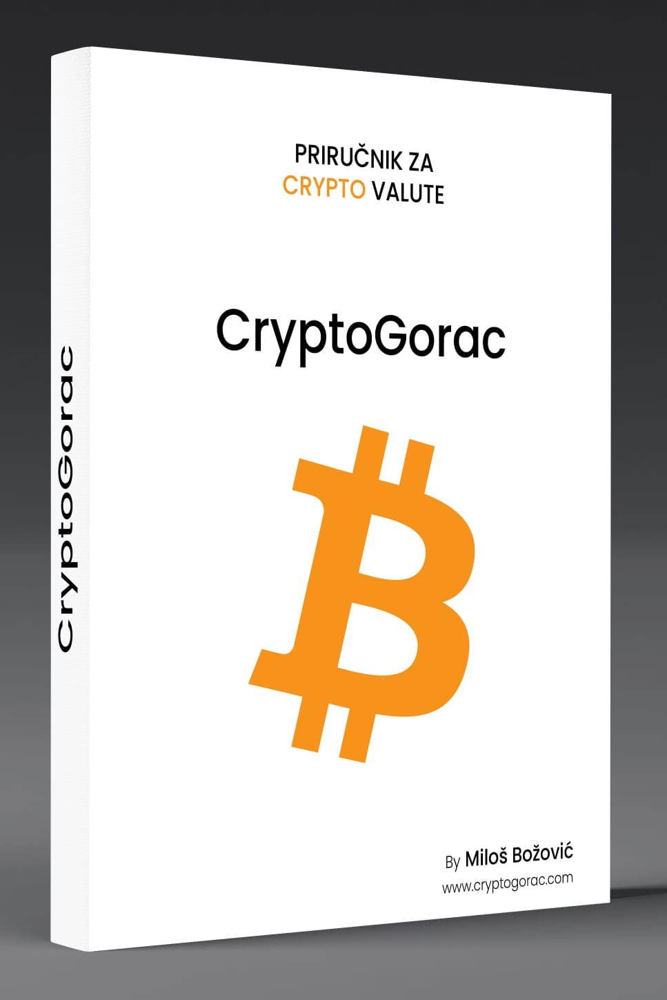

Crtpyo VALUTE
Crtpyo VALUTE
Priručnike možete naručiti odmah putem društvenih mreža.
Crypto VALUTE
Priručnik ima VI poglavlja koja opisuju što su kriptovalute, kako su nastale, gdje i kako ih kupiti i skladištiti, koje su njihove namjene i projekcije za budućnost, kao i rečnik sa kripto izrazima i kripto slengovima.
Uvod
Dobrodošli u svijet kriptovaluta, jednog od najuzbudljivijih i najdinamičnijih finansijskih tržišta današnjice. Možda ste već čuli za Bitcoin ili ste vidjeli vijesti o ljudima koji su ostvarili ogromne dobitke ulaganjem u digitalne valute, ali želite znati više. Ovaj priručnik pomoći će vam da razumijete suštinu kriptovaluta, kako ih koristiti, kako ih sigurno čuvati, te kako se pridržavati zakona i regulativa. Kriptovalute su revolucionarni koncept koji je promijenio način na koji ljudi razmišljaju o novcu, transakcijama i finansijskoj decentralizaciji. One su rezultat tehnoloških inovacija, uključujući blokčejn tehnologiju, koja je omogućila stvaranje digitalnih valuta koje su sigurne, transparentne i decentralizovane. Osim toga, ulazimo u doba metaverzuma, virtuelnog univerzuma gdje digitalna stvarnost sve više postaje stvarnost. Kriptovalute igraju ključnu ulogu u metaverzumu, omogućavajući digitalnu trgovinu, poslovanje i razmjenu vrijednosti unutar ovog virtuelnog svijeta. Metaverzum otvara nove prilike i izazove za korišćenje kriptovaluta na potpuno nove načine. Ovaj priručnik namijenjen je početnicima, ali i oni koji su već upoznati s tematikom mogu pronaći zanimljive informacije. Pomoći ćemo vam da razumijete osnove kriptovaluta i njihovu povezanost s metaverzumom, korake za trgovinu i upotrebu, te kako se zaštititi od potencijalnih prevara. Bez obzira na to da li ste potpuni početnik ili iskusni trgovac kriptovalutama, pronaći ćete korisne informacije i savjete u ovom priručniku. Kriptovalute predstavljaju više od novčanog sredstva. One su simbol promjene, samostalnosti i inovacija, kako u stvarnom svijetu, tako i u rastućem metaverzumu. Međutim, da biste pravilno koristili kriptovalute u digitalnom svijetu, najprije morate razumjeti njihovu suštinu. U nastavku ovog priručnika naučićete osnove, kako biste se osjećali sigurno i samopouzdano dok istražujete ovaj dinamični svijet. Počnimo!
Šta su kriptovalute?
Kriptovalute su digitalni oblik valute, odnosno virtuelne valute koje koriste kriptografiju za osiguravanje i kontrolu transakcija, kao i blockchain tehnologiju. Glavna karakteristika kriptovaluta je njihova decentralizacija, što znači da nisu pod kontrolom centralnih institucija, kao što su banke ili vlade. Ovo ih čini nezavisnim od tradicionalnih finansijskih sistema i omogućava globalnu razmjenu vrednosti. Kriptovalute funkcionišu na osnovu tehnologije poznate kao blockchain, koja je decentralizovana i sigurna. Svaka transakcija kriptovalute bilježi se u blokovima (blocks), a blokovi su povezani u nizu kako bi formirali lanac (chain). Ovaj lanac blokova (blockchain) čini transakcije sigurnim i transparentnim. Kada želite da izvršite transakciju sa kriptovalutom, ona se šalje na mrežu koristeći kriptografski potpis kako bi se obezbijedila sigurnost. Zatim se transakcija verifikuje od strane rudara (miners) putem računarskog procesa poznatog kao ASIC. Nakon što je transakcija potvrđena, dodaje se u blok na blockchainu, čime postaje odmah vidljiva. Kontrola je raspoređena među članovima mreže, što čini kriptovalute otpornim na cenzuru i omogućava korisnicima da samostalno upravljaju svojim finansijama.
ETH (Ethereum)
Ethereum (ETH), zajedno s Bitcoinom (BTC), predstavlja jednu od najmoćnijih kriptovaluta. Međutim, Ethereum nije samo valuta – to je mreža dizajnirana za kreiranje decentralizovanih digitalnih aplikacija (DApps). Ethereum je nastao 30. jula 2015. godine, a njegov osnivač, Vitalik Buterin, objavio je bijelu knjigu o Ethereumu i njegovoj tehnologiji još 2013. godine. Razvoj platforme počeo je ubrzo nakon objave, a Ethereum blockchain lansiran je dvije godine kasnije. Ethereum je u početku imao 210 miliona coina, a rudario se putem sistema Proof of Work (PoW). Prelazom na sistem Proof of Stake (PoS) uvedeno je spaljivanje određenog broja coina, s ciljem smanjenja ukupne ponude na 100 miliona coina. Ovaj prelazak omogućava veću efikasnost i smanjuje potrošnju energije. Ethereum je stvoren kako bi pružio napredne mogućnosti, uključujući pametne ugovore (Smart Contracts), koji se automatski izvršavaju kada su ispunjeni određeni uslovi, i decentralizovane aplikacije (DApps), koje korisnicima omogućavaju kreiranje aplikacija na blockchain mreži. Njegova kriptovaluta, ETH, koristi se za transakcije i plaćanje resursa na Ethereum mreži. Ethereumov ekosistem ima ogroman potencijal. Na jednom panelu, lično sam slušao Vitalika Buterina koji je izjavio da bi Ethereum do 2030. godine mogao upravljati sa 70-80% svjetskih finansija. Pokazatelji ovog razvoja uključuju nedavno partnerstvo s PayPal-om, kao i saradnju s tradicionalnim institucijama za prenos novca. Ethereum nije samo valuta već temelj za razvoj decentralizovanih rješenja koja će oblikovati budućnost finansijskog sistema i drugih industrija
Crypto recnik i crypto slengovi
• Altcoin: Alternativna kriptovaluta; svi coini koji postoje, osim Bitcoina, smatraju se altcoinima.
• Altcoin Season (Sezona alternativnih kriptovaluta): Period kada alternativne kriptovalute rastu brže od Bitcoina. Ovaj događaj obično se dešava kada je Bitcoin stabilan neko vrijeme.
• ATH (All-Time High): Najviša cijena koju je neka kriptovaluta dostigla u svojoj istoriji.
• Augmented Reality (AR): Tehnologija koja spaja digitalne elemente sa stvarnim svijetom, omogućavajući korisnicima da vide virtuelne objekte u stvarnom okruženju.
• Avatar: Digitalna reprezentacija korisnika u metaverzumu, koja može biti prilagođena njihovim željama i preferencijama. Svaki avatar može biti i NFT.
• ADA-Cardano: Blockchain platforma fokusirana na održivost, skalabilnost i interoperabilnost, koja nudi pametne ugovore i decentralizovane aplikacije (DApps) uz naučni pristup razvoju. Ima značajan doprinos obrazovnom i naučnom sektoru.
• Bear Market (Medvjeđe tržište): Period kada cijene kriptovaluta padaju. Ovo se odnosi na duži vremenski period, obično uslovljen velikim prodajama i proizvodnjom novih tokena.
• BIP (Bitcoin Improvement Proposal): Prijedlog za unapređenje Bitcoin protokola.
• BTC (Bitcoin): Prva i najpoznatija kriptovaluta, osnovana 2009. godine.
• Blockchain: Decentralizovani registar transakcija koji čuva podatke o svim transakcijama u kripto mreži.
• Bull Market (Pazar bika): Period kada cijene kriptovaluta rastu. Uzrokovan je velikim ulaskom novog kapitala, ali i tehnološki revolucionarnim događajima.
• Cold Storage (Hladno skladištenje): Čuvanje kriptovaluta izvan internetne mreže radi dodatne sigurnosti, na primjer, čuvanje na offline wallet-u (hladni hardverski novčanik).
• Consensus Algorithm (Algoritam konsenzusa): Tehnologija koja se koristi za postizanje sporazuma među članovima mreže o validnosti transakcija.
• DOT (Polkadot): Jedan od najpoznatijih kripto projekata, koji lično cijenim i pratim s velikim interesovanjem.
• Cross-Chain (Prekogranični lanac): Proces koji omogućava komunikaciju između različitih blockchain mreža koje u osnovi nijesu kompatibilne. Ovo je složen proces, a jedan od projekata koji to omogućava je WAN.
• Decentralization (Decentralizacija): Princip prema kojem nema centralne vlasti koja kontroliše kriptovalute i blockchain mreže. Korisnici mreže su vlasnici i donosioci pravila. Neki projekti na vrlo transparentan način omogućavaju zajednici da odlučuje o daljim pravcima razvoja projekta.
• Decentralized Identity (Decentralizovani identitet): Koncept gdje korisnici imaju potpunu kontrolu nad svojim digitalnim identitetom i podacima, posebno u metaverzumu.
• DeFi (Decentralizovani finansijski sistem): Sistem koji koristi pametne ugovore i blockchain tehnologiju za pružanje finansijskih usluga.
• Digital Land (Digitalno zemljište): Virtuelna parcela zemljišta u metaverzumu, koju korisnici mogu kupiti, iznajmiti ili koristiti za izgradnju digitalnih objekata.
• Digital Signature (Digitalni potpis): Tehnika korišćena za potvrdu autentičnosti i cjelovitosti digitalnih poruka i transakcija.
• Distributed Ledger Technology (DLT): Tehnologija distribuiranih registara, koja uključuje blockchain.
• Ether (ETH): Kriptovaluta koja se koristi za pokretanje pametnih ugovora na Ethereum mreži.
• Fiat Currency (Fiat valuta): Tradicionalne nacionalne valute, poput dolara i eura.
• FOMO (Fear of Missing Out): Strah od propuštanja, emocionalni faktor koji može uticati na odluke o trgovanju kriptovalutama.
• Fork (Razdvajanje): Promjena u softveru blockchaina koja dovodi do stvaranja nove verzije blockchaina.
• FIL (Filecoin): Decentralizovana platforma za skladištenje podataka koja koristi blockchain tehnologiju i IPFS (InterPlanetary File System) za dijeljenje i skladištenje podataka uz pomoć decentralizovane mreže.
• Gas Fee (Troškovi gasa): Naknada koju korisnik plaća za izvršenje transakcije ili pametnog ugovora na Ethereum mreži. Druge mreže takođe imaju svoje "gas fee", a njihova visina diktira cijenu transakcije.
• Halving (Prepolovljavanje): Periodično smanjenje nagrade koja se dodjeljuje rudarima na blockchainu, obično svakih četiri godine, kao što je slučaj kod Bitcoina.
Ovo su neki od dijelova iz našeg priručnika za kriptovalute od autora:
Miloš Božović CEO cryptogorac.com .